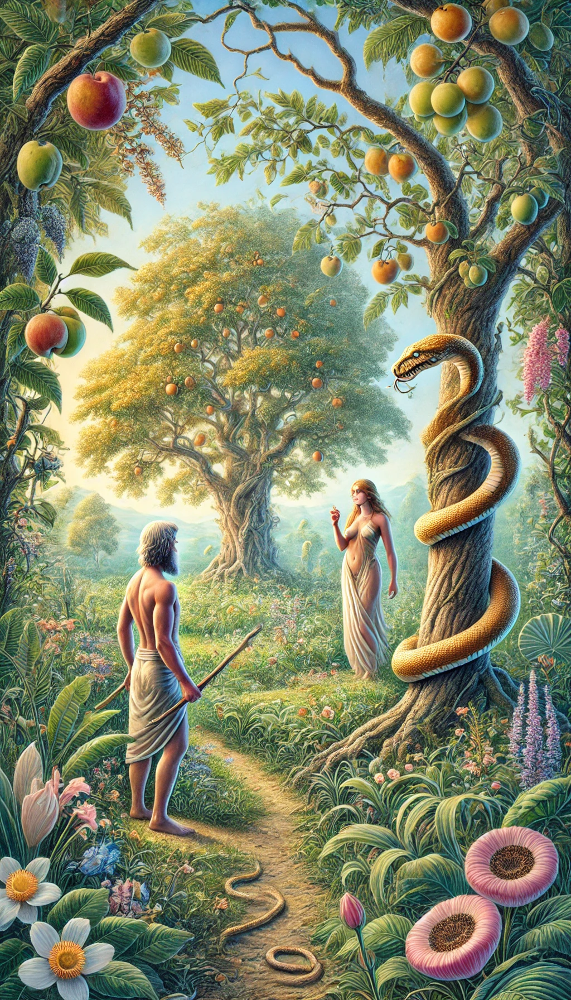

1 Pero la serpiente era astuta, más que todos los animales del campo que Jehová Dios había hecho; la cual dijo a la mujer: ¿Conque Dios os ha dicho: No comáis de todo árbol del huerto?
2 Y la mujer respondió a la serpiente: Del fruto de los árboles del huerto podemos comer;
3 pero del fruto del árbol que está en medio del huerto dijo Dios: No comeréis de él, ni le tocaréis, para que no muráis.
4 Entonces la serpiente dijo a la mujer: No moriréis;
5 sino que sabe Dios que el día que comáis de él, serán abiertos vuestros ojos, y seréis como Dios, sabiendo el bien y el mal.
6 Y vio la mujer que el árbol era bueno para comer, y que era agradable a los ojos, y árbol codiciable para alcanzar la sabiduría; y tomó de su fruto, y comió; y dio también a su marido, el cual comió así como ella.
7 Entonces fueron abiertos los ojos de ambos, y conocieron que estaban desnudos; entonces cosieron hojas de higuera, y se hicieron delantales.

8 Y oyeron la voz de Jehová Dios que se paseaba en el huerto, al aire del día; y el hombre y su mujer se escondieron de la presencia de Jehová Dios entre los árboles del huerto.
9 Mas Jehová Dios llamó al hombre, y le dijo: ¿Dónde estás tú?
10 Y él respondió: Oí tu voz en el huerto, y tuve miedo, porque estaba desnudo; y me escondí.
11 Y Dios le dijo: ¿Quién te enseñó que estabas desnudo? ¿Has comido del árbol del que yo te mandé no comieses?
12 Y el hombre respondió: La mujer que me diste por compañera me dio del árbol, y yo comí.
13 Entonces Jehová Dios dijo a la mujer: ¿Qué es lo que has hecho? Y dijo la mujer: La serpiente me engañó, y comí.
14 Y Jehová Dios dijo a la serpiente: Por cuanto esto hiciste, maldita serás entre todas las bestias y entre todos los animales del campo; sobre tu pecho andarás, y polvo comerás todos los días de tu vida.
15 Y pondré enemistad entre ti y la mujer, y entre tu simiente y la simiente suya; ésta te herirá en la cabeza, y tú le herirás en el calcañar.
16 A la mujer dijo: Multiplicaré en gran manera los dolores en tus preñeces; con dolor darás a luz los hijos; y tu deseo será para tu marido, y él se enseñoreará de ti.
17 Y al hombre dijo: Por cuanto obedeciste a la voz de tu mujer, y comiste del árbol de que te mandé diciendo: No comerás de él; maldita será la tierra por tu causa; con dolor comerás de ella todos los días de tu vida.
18 Espinos y cardos te producirá, y comerás plantas del campo.
19 Con el sudor de tu rostro comerás el pan hasta que vuelvas a la tierra, porque de ella fuiste tomado; pues polvo eres, y al polvo volverás.
20 Y llamó Adán el nombre de su mujer, Eva, por cuanto ella era madre de todos los vivientes.
21 Y Jehová Dios hizo al hombre y a su mujer túnicas de pieles, y los vistió.
22 Y dijo Jehová Dios: He aquí el hombre es como uno de nosotros, sabiendo el bien y el mal; ahora, pues, que no alargue su mano, y tome también del árbol de la vida, y coma, y viva para siempre.
23 Y lo sacó Jehová del huerto del Edén, para que labrase la tierra de que fue tomado.
24 Echó, pues, fuera al hombre, y puso al oriente del huerto de Edén querubines, y una espada encendida que se revolvía por todos lados, para guardar el camino del árbol de la vida.